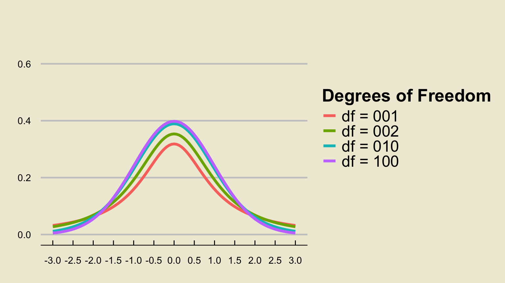
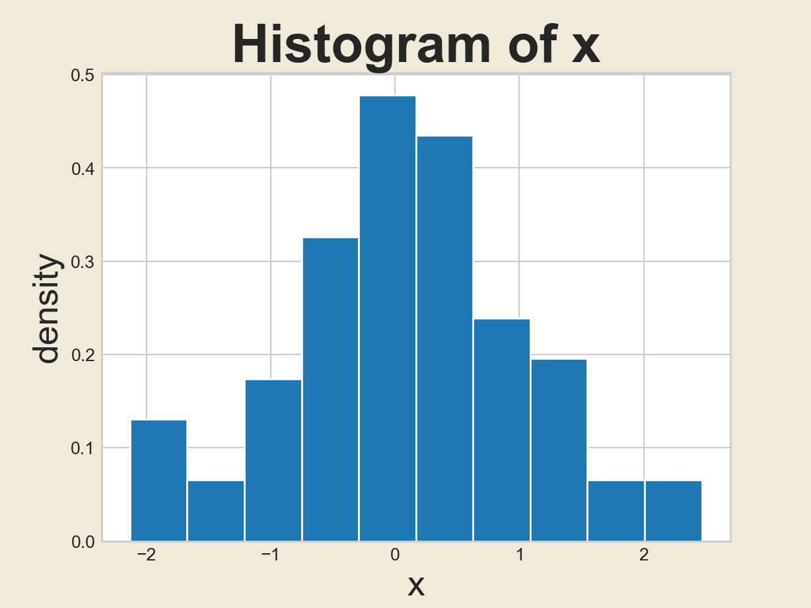
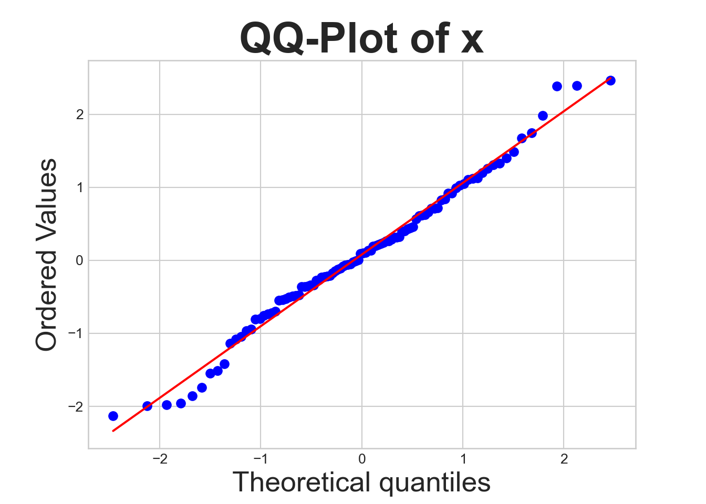
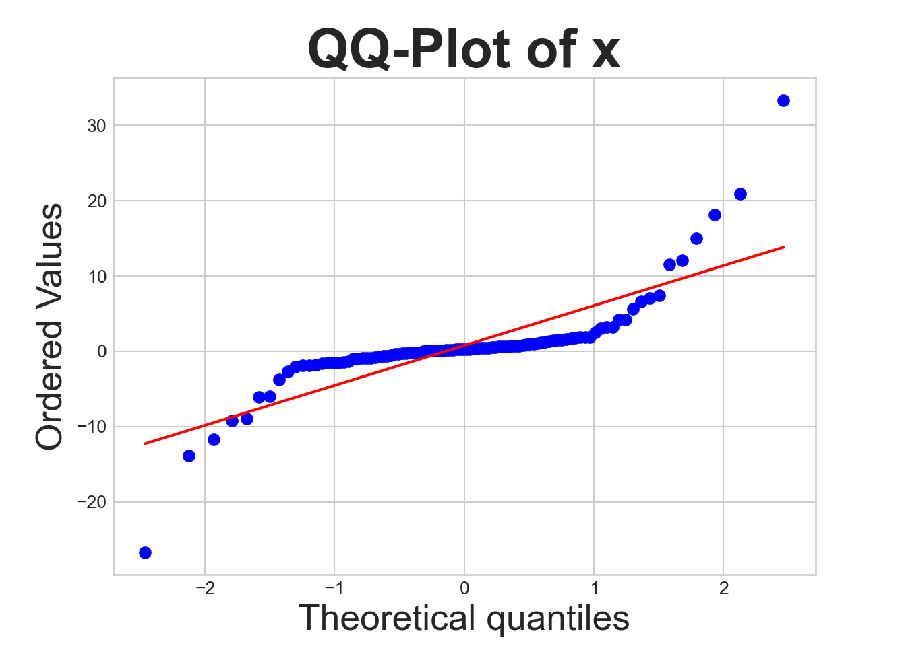

PSTAT 5A: Lecture 13
Inference on the Mean
Previously
Over the course of the past few lectures, we’ve been dealing primarily with population proportions.
A natural point estimate of \(p\) is \(\widehat{P}\), the sample proportion.
- The Central Limit Theorem for Proportions helped us even further by providing the sampling distribution of \(\widehat{P}\), under certain conditions (the success-failure conditions).
We then used the sampling distribution of \(\widehat{P}\) to construct confidence intervals for the true proportion \(p\).
Now we will turn our attention to a different population parameter.
Leadup
- Recall from last lecture that any of the descriptive statistics we discussed in Week 1 can be viewed as population parameters, when they apply to the population.
- E.g. population proportion (\(p\)), population variance (\(\sigma^2\)), etc.
- Of particular interest to statisticians is often the population mean, \(\mu\).
- Let’s try and draw some analogies from our work with population proportions.
- When trying to make inferences on a population proportion \(p\), we used the sample proportion \(\widehat{P}\) as a proxy (specifically, a point estimator).
- Any guesses on what we might use as a point estimator of \(\mu\)?
- That’s right- the sample mean \(\overline{X}\)!
Notation
Again, it will be useful to establish some notation:
- \(\mu\) represents the population mean, and is deterministic (i.e. fixed) but unknown.
- \(\overline{X}\) represents the mean of some hypothetical sample, and is therefore random (as different samples result in different sample means)
- \(\overline{x}\) represents the mean of a specific sample, and is therefore deterministic (i.e. “we’ve taken this particular sample right here and computed its mean”).
Just as \(\widehat{P}\) has a sampling distribution, so too does \(\overline{X}\).
The sampling distribution of \(\overline{X}\), however, will end up requiring a few more considerations than the sampling distribution of \(\widehat{P}\).
- We will need it, however, in order to construct confidence intervals for \(\mu\).
General Confidence Intervals
We will follow the general idea we used before of constructing confidence intervals as \(\widehat{\theta} \pm \mathrm{m.e.}\).
In this case, we use \(\overline{X}\) as our point estimator.
Here is a useful result from Probability Theory:
Result
Consider a population with mean \(\mu\) and standard deviation \(\sigma\). If \(\overline{X}\) denotes the mean of a sample of size \(n\) taken from this population, then \[ \mathrm{SD}(\overline{X}) = \frac{\sigma}{\sqrt{n}} \]
General Confidence Intervals
- Therefore, our confidence intervals will take the form \[ \overline{X} \pm c \cdot \frac{\sigma}{\sqrt{n}} \] where the constant \(c\) depends on both the sampling distribution of \(\overline{X}\) as well as the confidence level.
Normal Population
Let’s work on finding the sampling distribution of \(\overline{X}\).
It turns out that the first thing we need to ask is whether the underlying population is normally distributed or not.
If the underlying population is normally distributed [again with population mean \(\mu\) and population standard deviation \(\sigma\)], we have that \[ \frac{\overline{X} - \mu}{\sigma / \sqrt{n}} \sim \mathcal{N}(0, \ 1) \] meaning the constant \(c\) should be selected as the appropriate percentile of the standard normal distribution: \[ \overline{x} \pm z^{\ast} \cdot \frac{\sigma}{\sqrt{n}} \]
Worked-Out Example
Worked-Out Example 1
The heights of adult males are assumed to follow a normal distribution with mean 70 in and standard deviation 15 in. A representative sample of 120 adult males is taken, and the average height of males in this sample is recorded.
- What is the random variable of interest?
- Is the value of 70 in a population parameter or a sample statistic?
- What is the probability that the average height of males in the sample is between 69.5 in and 71.5 in?
Solutions
\(\overline{X} =\) the average height of a sample of 120 adult males.
The value of 70 in is a population parameter, as it is the true average height of all adult males.
The quantity we seek is \(\mathbb{P}(69.5 \leq \overline{X} \leq 71.5)\). Because the population is normally distributed, we can use our result above to conclude \[ \overline{X} \sim \mathcal{N}\left( 70, \ \frac{15}{\sqrt{120}} \right) \sim \mathcal{N}\left( 70, \ 1.369 \right) \]
- To find \(\mathbb{P}(69.5 \leq \overline{X} \leq 71.5)\), we therefore utilize the same techniques we used previously, when dealing with normal distribution problems: \[\mathbb{P}(69.5 \leq \overline{X} \leq 71.5) = \mathbb{P}(\overline{X} \leq 71.5) - \mathbb{P}(\overline{X} \leq 69.5) \]
Solutions
- The associated \(z-\)scores are \[\begin{align*} z_1 & = \frac{71.5 - 70}{\left( \frac{15}{\sqrt{120}} \right)} \approx 1.10 \\ z_2 & = \frac{69.5 - 70}{\left( \frac{15}{\sqrt{120}} \right)} \approx -0.37 \end{align*}\]
- The associated probabilities (from a \(z-\)table) are \(0.8643\) and \(0.3557\), respectively, meaning the desired probability is \[ 0.8643 - 0.3557 = \boxed{ 0.5086 = 50.86\% } \]
Non-Normal Population
Alright, so that explains what to do if the population values follow a normal distribution.
But what if they don’t? In real-world settings, we don’t typically get to know exactly what the population distribution is.
If our population is not normally distributed, we need to ask ourselves whether we have a “large enough sample”.
Admittedly, there isn’t a single agreed-upon cutoff for “large enough”- for the purposes of this class, we will use \(n \geq 30\) to mean “large enough” and \(n < 30\) to therefore be “not large enough.”
Non-Normal Population, \(n < 30\)
If the population is non-normal, and the sample size is not large enough…
… we can’t do anything.
More specifically, there aren’t any results we can use to confidently make inferences about the population mean- there is just too much uncertainty, between the uncertainty regarding the population’s distribution and the small sample size.
Non-Normal Population, \(n \geq 30\)
If the population is non-normal, and the sample size is large enough…
… we’re still (perhaps surprisingly) in business!
It turns out that if \(n\) is large enough, \[ \frac{\overline{X} - \mu}{\sigma / \sqrt{n}} \sim \mathcal{N}(0, \ 1) \] that is, the sample mean once again has a normal sampling distribution!
In fact, this is such an important result, we give it a name:
Central Limit Theorem for the Sample Mean
Central Limit Theorem for the Sample Mean
If we have reasonably representative samples of large enough size \(n\), taken from a population with true mean \(\mu\) and true standard deviation \(\sigma\), then \[ \frac{\overline{X} - \mu}{\sigma / \sqrt{n}} \sim \mathcal{N}\left(0, \ 1 \right) \] or, equivalently, \[ \overline{X} \sim \mathcal{N}\left( \mu, \ \frac{\sigma}{\sqrt{n}} \right) \] where \(\overline{X}\) denotes the sample mean.
Worked-Out Example
Worked-Out Example 2
The temperatures collected at all weather stations in Antarctica follow some unknown distribution with unknown mean and known standard deviation 8oF. A researcher records the temperature measurements from a representative sample of 81 different weather stations, and finds the average temperature to be 26oF.
- What is the population?
- What is the sample?
- Define the random variable of interest.
- What is the probability that this observed average of 26oF lies within 1oF of the true average temperature across all weather stations in Antarctica?
- Construct a 90% confidence interval for the true average temperature across all weather stations in Antarctica.
Solutions
The population is the set of all weather stations in Antarctica.
The sample is the 81 weather stations selected by the researcher.
The random variable of interest is \(\overline{X}\), the average temperature across 81 randomly-selected weather stations in Antarctica.
Part (d): This is where things get interesting!
- Is the population normally distributed?
- No. Or, at least, we don’t know for certain, so it’s safer not to assume it is.
- Is our sample size large enough to invoke the CLT?
- Yes, since \(n = 81 \geq 30\).
- Therefore, the CLT applies and tells us that \[ \overline{X} \sim \mathcal{N}\left(\mu, \ \frac{8}{\sqrt{81}} \right) \sim \mathcal{N}\left(\mu, \ \frac{8}{9} \right) \]
Solutions
Again, what we have found is \[ \overline{X} \sim \mathcal{N}\left(\mu, \ \frac{8}{\sqrt{81}} \right) \sim \mathcal{N}\left(\mu, \ \frac{8}{9} \right) \]
We seek \(\mathbb{P}(\mu - 1 \leq \overline{X} \leq \mu + 1)\), which we first write as \[ \mathbb{P}(\overline{X} \leq \mu + 1) - \mathbb{P}(\overline{X} \leq \mu - 1) \]
Computing the necessary \(z-\)scores yields \[\begin{align*} z_1 & = \frac{(\mu + 1) - \mu}{8/9} = \frac{9}{8} \approx 1.13 \\ z_2 & = \frac{(\mu - 1) - \mu}{8/9} = -\frac{9}{8} \approx -1.13 \end{align*}\]
Solutions
- The corresponding values from the normal table are \(0.8708\) and \(0.1292\), respectively, meaning the desired probability is \[ 0.8708 - 0.1292 = \boxed{74.16\%} \]
Unknown \(\sigma\)?
Notice that in the previous worked-out example (and, indeed, in the CLT for sample means), we need information on the true population standard deviation \(\sigma\).
What happens if we don’t have access to \(\sigma\)?
Well, we encountered a somewhat similar situation in our discussion on proportions; the standard error of \(\widehat{P}\) depended on \(p\), which proves to be a problem in practice (as, again, the true value of \(p\) is often unknown).
Does anyone remember how we solved this issue in the context of population proportions?
- That’s right- we used the substitution approximation!
- Specifically, we replaced the unknown parameter (\(p\)) with a natural point estimator of it.
Unknown \(\sigma\)?
Can anyone propose a point estimator for \(\sigma\)?
That’s right; \(s\), the sample standard deviation! \[ s = \sqrt{ \frac{1}{n - 1} \sum_{i=1}^{n} (X_i - \overline{X})^2} \]
In other words, our proposition is to use confidence intervals of the form \[ \overline{x} \pm c \cdot \frac{s}{\sqrt{n}} \]
Notice, however, that this introduces additional uncertainty into the problem as \(s\) itself is a random variable (different samples result in different sample standard deviations).
It turns out that the additional uncertainty introduced is so large that we become no longer able to use the normal distribution.
Using \(s\) in place of \(\sigma\)
Firstly, recall that we used percentiles of the standard normal distribution because \[ \frac{\overline{X} - \mu}{\sigma / \sqrt{n}} \sim \mathcal{N}(0, \ 1) \]
Mathematically, what the above discussion is saying is that the distribution of \[ \frac{\overline{X} - \mu}{s / \sqrt{n}} \] is no longer normal.
It turns out that, still assuming a large enough sample size, the quantity above follows what is known as a t-distribution.
The t-distribution
The \(t-\)distribution looks very similar to the standard normal distribution in that it is centered at 1, and has a bell-like density curve.
However, one key difference is that the \(t-\)distribution is parameterized by a single parameter, called the degrees of freedom, which we abbreviate \(\mathrm{df}\).
The t-distribution
Another key property is that, for all finite degrees of freedom, the tails of the t-distribution density curve are “wider” (i.e. higher) than the tails of the standard normal density curve.
- What this means is that the t-distribution allows for higher probabilities of tail events, thereby incorporating the additional uncertainty injected into our confidence intervals by using \(s\) in place of \(\sigma\)
An interesting fact is that the t-distribution with \(\infty\) degrees of freedom is equivalent to the standard normal distribution.
- As such, with greater degrees of freedom, the t-distribution - and its percentiles - more and more closely resembles the standard normal distribution.
Back to Confidence Intervals
Here is the result we’ve been working toward: with samples of reasonably large size \(n\) from a distribution with mean \(mu\) and standard deviation \(\sigma\), \[ \frac{\overline{X} - \mu}{s / \sqrt{n}} \sim t_{n - 1} \] where \(t_{n - 1}\) denotes the \(t-\)distribution with \(n - 1\) degrees of freedom.
As such, our confidence intervals become \[ \overline{x} \pm t_{n - 1, \ \alpha} \cdot \frac{s}{\sqrt{n}} \] where \(t_{n - 1, \ \alpha}\) denotes the appropriate quantile (corresponding to our desired confidence level) of the \(t_{n - 1}\) distribution.
Worked-Out Example
Worked-Out Example 3
A sociologist is interested in performing inference on the true average monthly income (in thousands of dollars) of all citizens of the nation of Gauchonia. As such, she takes a representative sample of 49 people, and finds that these 49 people have an average monthly income of 2.25 and a standard deviation of 1.66.
- What is the population?
- What is the sample?
- Define the random variable of interest.
- Construct a 95% confidence interval for the true average monthly income (in thousands of dollars) of Gauchonian citizens.
Solutions
The population is the set of all Gauchonian residents.
The sample is the set of 49 Gauchonian residents included in the sociologist’s sample.
The random variable of interest is \(\overline{X}\), the sample average monthly income (in thousands of dollars) of a representative sample of 49 Gauchonian* residents.
Solutions (cont’d)
Part (d)
Is the population normally distributed?
- No.
Is the sample size large enough?
- Yes; \(n = 49 \geq 30\).
Do we know the population standard deviation?
- No, we only know \(s\).
Therefore, we need to use the t-distribution with \(n - 1 = 49 - 1 = 48\) degrees of freedom.
Specifically, we need to find the 2.5th percentile of the \(t_{48}\) distribution.
Let’s go over how to read a t-table.
Reading a t-table
(In-Class Exercise)
Solutions (cont’d)
- I’d also like to mention that we can use Python to help us:
import scipy.stats as sps
sps.t.ppf(0.025, 48)-2.010634754696446You’ll learn more about this code during Lab today!
Therefore, our 95% confidence interval takes the form \[ \overline{x} \pm 2.01 \cdot \frac{s}{\sqrt{49}} \] or, equivalently, \[ (2.25) \pm (2.01) \cdot \frac{1.66}{7} = 2.25 \pm 0.477 = \boxed{[1.773 \ , \ 2.727]}\]
The interpretation of this interval is much the same as our intervals for proportions:
We are 95% confident that the true average monthly income (in thousands of dollars) of Gauchonian residents is between 1.773 and 2.727.
General Flowchart
graph TB
A[Is the population Normal? . ] --> |Yes| B{{Use Normal .}}
A --> |No| C[Is n >= 30? .]
C --> |Yes| D[sigma or s? .]
C --> |No| E{{cannot proceed .}}
D --> |sigma| F{{Use Normal .}}
D --> |s| G{{Use t }}
Aside: Testing Distributional Fits
Testing Distributional Fits
Notice that the first question we need to ask ourselves when trying to perform inference on a sample mean is whether or not we believe our population to be normally distributed.
This begs the question: given a set of numbers, how can we tell if these numbers were drawn from a normal distribution or not?
For example, consider the following set of numbers (which have been assigned to a variable called
x):
[ 1.3315865 0.71527897 -1.54540029 -0.00838385 0.62133597 -0.72008556
0.26551159 0.10854853 0.00429143 -0.17460021 0.43302619 1.20303737
-0.96506567 1.02827408 0.22863013 0.44513761 -1.13660221 0.13513688
1.484537 -1.07980489 -1.97772828 -1.7433723 0.26607016 2.38496733
1.12369125 1.67262221 0.09914922 1.39799638 -0.27124799 0.61320418
-0.26731719 -0.54930901 0.1327083 -0.47614201 1.30847308 0.19501328
0.40020999 -0.33763234 1.25647226 -0.7319695 0.66023155 -0.35087189
-0.93943336 -0.48933722 -0.80459114 -0.21269764 -0.33914025 0.31216994
0.56515267 -0.14742026 -0.02590534 0.2890942 -0.53987907 0.70816002
0.84222474 0.2035808 2.39470366 0.91745894 -0.11227247 -0.36218045
-0.23218226 -0.5017289 1.12878515 -0.69781003 -0.08112218 -0.52929608
1.04618286 -1.41855603 -0.36249918 -0.12190569 0.31935642 0.4609029
-0.21578989 0.98907246 0.31475378 2.46765106 -1.50832149 0.62060066
-1.04513254 -0.79800882 1.98508459 1.74481415 -1.85618548 -0.2227737
-0.06584785 -2.13171211 -0.04883051 0.39334122 0.21726515 -1.99439377
1.10770823 0.24454398 -0.06191203 -0.75389296 0.71195902 0.91826915
-0.48209314 0.08958761 0.82699862 -1.95451212]Idea 1: Histogram
- One idea would be to generate the histogram of
x:
import matplotlib
import matplotlib.pyplot as plt
plt.style.use('seaborn-v0_8-whitegrid')
plt.figure(facecolor="#f0ebd8")
plt.hist(x,
edgecolor = "white",
density = True);
plt.xlabel("x", fontsize = 20);
plt.ylabel("density", fontsize = 20);
plt.title("Histogram of x", fontsize = 30, fontweight = "bold");
plt.show()
Downsides
However, we know that histograms are visually very dependent on the binwidth that was selected!
- Furthermore, there are some distributions that look bell-shaped, but are not normal; e.g. the t-distribution!
As such, we would like a slightly more rigorous way to check for normality.
The tool statisticians most often use is called a quantile-quantile plot, or QQ-Plot for short.
You don’t have to worry too much (for now) about the details of how they are constructed; for now, we’ll just use Python to generate them and then interpret them ourselves.
QQ-Plot
scipy.stats.probplot(x, plot = plt);sps.probplot(x, plot = plt);
plt.xlabel("Theoretical quantiles", fontsize = 20);
plt.ylabel("Ordered Values", fontsize = 20);
plt.title("QQ-Plot of x", fontsize = 30, fontweight = "bold");
plt.show()
Interpreting QQ-Plots
The more linear the QQ-plot, the more likely it is that the data came from a normal distribution.
When checking for deviations from linearity, however, make sure to check the tails as that is most often where non-normality manifests itself the clearest.
Normal or Not?
y = sps.t.rvs(1, size = 100)
sps.probplot(y, plot = plt);
plt.xlabel("Theoretical quantiles", fontsize = 20);
plt.ylabel("Ordered Values", fontsize = 20);
plt.title("QQ-Plot of x", fontsize = 30, fontweight = "bold");
plt.show()